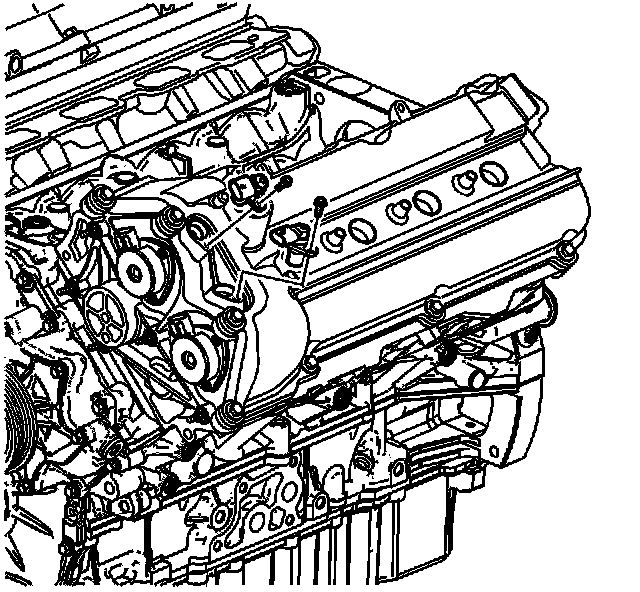
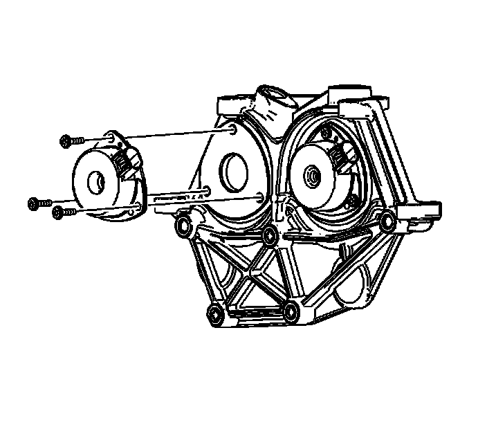
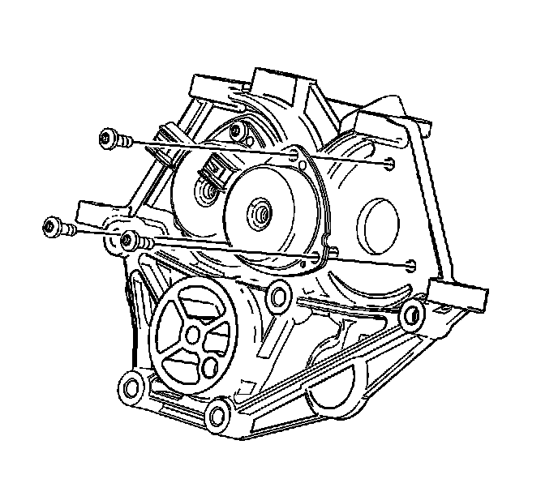
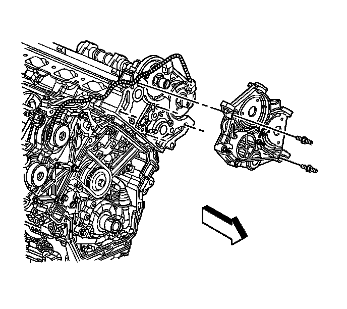
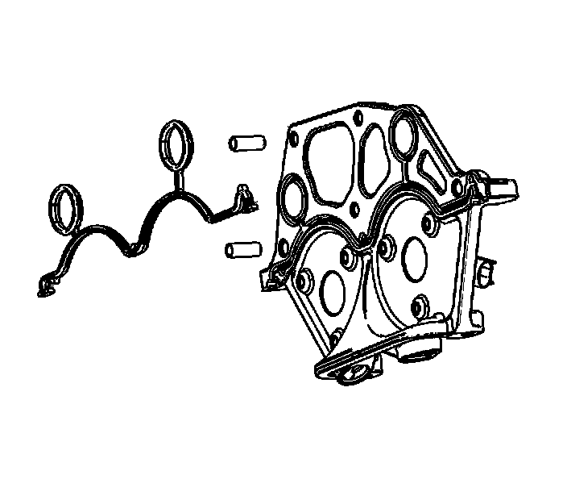

Camshaft Position Actuator Housing Replacement - Left Side
Camshaft Position Actuator Housing Replacement - Left Side
Removal Procedure
1. Remove the fuel injector sight shield. Refer to Fuel Injector Sight Shield Replacement (Service and Repair) .

2. Remove the left exhaust camshaft sensor. Refer to Camshaft Position Sensor Replacement - Bank 2 (Left Side) Exhaust (Service and Repair) .
3. Remove the left intake camshaft sensor. Refer to Camshaft Position Sensor Replacement - Bank 2 (Left Side) Intake (Service and Repair) .
4. Remove the power steering reservoir. Refer to Remote Power Steering Fluid Reservoir Replacement (LY7 - Gas, 6 Cylinder, 3.6L, SFI, V6) (Service and Repair)Remote Power Steering Fluid Reservoir Replacement (LH2 - Gas, 8 Cylinder, 4.6L, SFI, V8, DOHC, HO) (Service and Repair) .
5. Remove the left camshaft cover. Refer to Camshaft Cover Replacement - Left Side (Camshaft Cover Replacement - Left Side) .
6. Remove the drive belt tensioner. Refer to Drive Belt Tensioner Replacement - Air Conditioning, Power Steering, and Water Pump (Drive Belt Tensioner Replacement - Air Conditioning, Power Steering, and Water Pump) .

7. Remove the left intake camshaft position actuator solenoid bolts.
8. Remove the left intake camshaft position actuator solenoid.
9. Remove the left intake camshaft position actuator solenoid alignment plug and discard.

10. Remove the left exhaust camshaft position actuator solenoid bolts.
11. Remove the left exhaust camshaft position actuator solenoid.
12. Remove the left exhaust camshaft position actuator solenoid alignment plug and discard.

13. Remove the left camshaft position actuator housing bolts.
14. Remove the left camshaft position actuator housing.
Installation Procedure

1. Install a NEW gasket to the camshaft position actuator housing.
2. Install the left camshaft position actuator housing to the left cylinder head.
Notice: Refer to Fastener Notice (Fastener Notice) .
3. Install the actuator housing bolts and studs.
Tighten the actuator housing bolts and studs to 10 N.m (89 lb in).
Important: The camshaft position actuator solenoids must be precisely aligned to the camshaft position actuator oil control valves on the end of the camshafts. This is accomplished with an alignment pin. Failure to align the camshaft position actuator solenoids to the camshaft position actuator oil control valves can lead to poor engine performance and engine component damage.
4. To allow for camshaft position actuator solenoid to camshaft position actuator oil control valve alignment, DO NOT install NEW camshaft position actuator solenoid alignment plugs at this time.
5. Use the following procedure for the camshaft position actuator solenoid alignment:
1. Make an alignment pin from drill rod 15/64 inch diameter and at least 50 mm (1.97 in) long.
2. Verify that the alignment pin will pass through the camshaft position actuator solenoid alignment hole.
3. Verify that the alignment pin will fit into the alignment hole in the camshaft position actuator oil control valve.
4. Apply a 2 mm (0.079 in) bead of RTV around the flange of the camshaft position actuator solenoid. Refer to Sealers, Adhesives, and Lubricants (Specifications) for the correct part number.
5. Install the camshaft position actuator solenoid over the oil control valve.
6. Install the alignment pin through the solenoid alignment hole and into the oil control valve alignment hole.
7. With the alignment pin in place, install the camshaft position actuator solenoid bolts.
Tighten the camshaft position actuator solenoid bolts to 8 N.m (71 lb in).
8. Remove the alignment pin.
9. Install a NEW camshaft position actuator solenoid plug.
10. Repeat steps 4 through 9 for the exhaust camshaft position actuator solenoid.
6. Install the left camshaft cover. Refer to Camshaft Cover Replacement - Left Side (Camshaft Cover Replacement - Left Side) .
7. Install the left intake camshaft sensor. Refer to Camshaft Position Sensor Replacement - Bank 2 (Left Side) Intake (Service and Repair) .
8. Install the left exhaust camshaft sensor. Refer to Camshaft Position Sensor Replacement - Bank 2 (Left Side) Exhaust (Service and Repair) .
9. Install the drive belt tensioner. Refer to Drive Belt Tensioner Replacement - Air Conditioning, Power Steering, and Water Pump (Drive Belt Tensioner Replacement - Air Conditioning, Power Steering, and Water Pump) .
10. Install the power steering reservoir. Refer to Remote Power Steering Fluid Reservoir Replacement (LY7 - Gas, 6 Cylinder, 3.6L, SFI, V6) (Service and Repair)Remote Power Steering Fluid Reservoir Replacement (LH2 - Gas, 8 Cylinder, 4.6L, SFI, V8, DOHC, HO) (Service and Repair) .
11. Install the fuel injector sight shield. Refer to Fuel Injector Sight Shield Replacement (Service and Repair) .